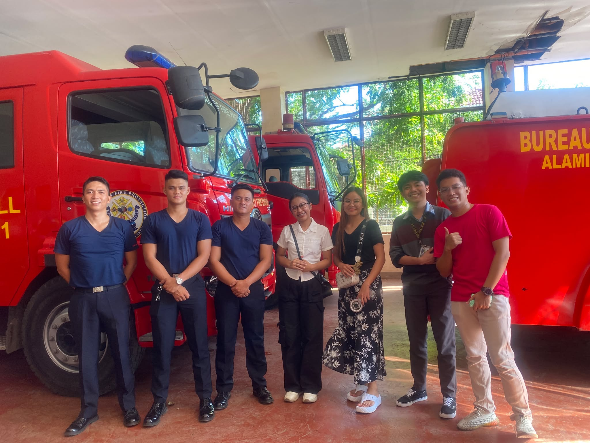

Staying calm, staying respectful
During my on-the-job training at the Bureau of Fire Protection, I gained experience in administrative tasks and client interaction. I learned to handle complaints professionally, including difficult conversations, by staying calm and responding with respect.
Understanding the process
I became familiar with the flow of paperwork: how documents are processed, filed, and passed between departments. Following those steps carefully helped me understand the importance of clear, reliable office procedures.
Patience, clear communication, and attention to process make everyday work better.
